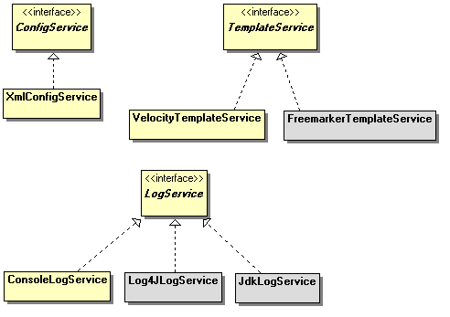

Package org.apache.click.extras.service
package org.apache.click.extras.service
Provides alternative Click runtime service classes.

-
ClassesClassDescriptionProvides a Freemarker TemplateService class.Provides a JDK Util Logging LogService adapter class with a logger name of "
Click".Provides a Log4J LogService adapter class.Provides a SLF4J LogService adapter class with a logger name of "Click".